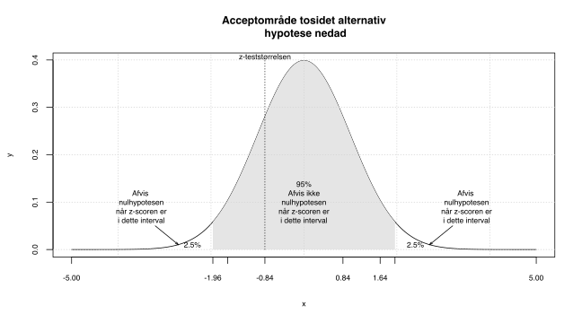
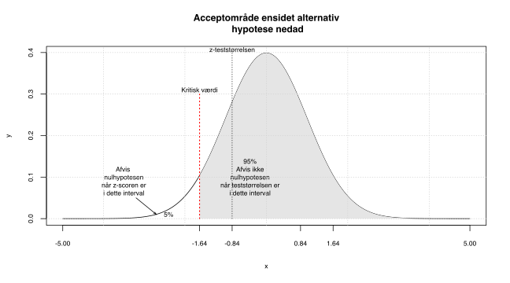
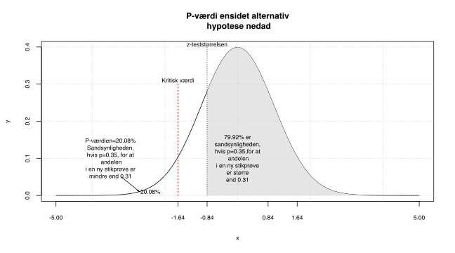
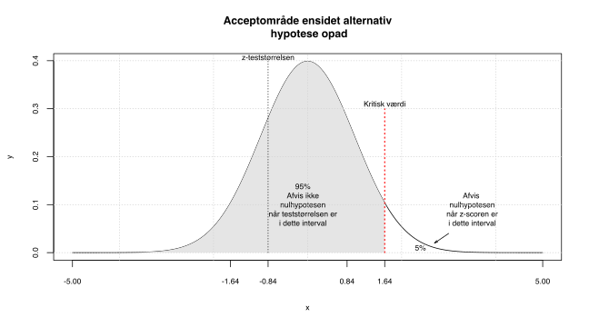
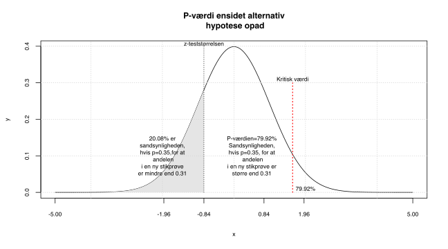

Kapitel 7 1 Andel
7.1 Parameterestimat for andele
Hvis vi har spurgt 100 danskere om de bruger MobilePay, er vi ikke specifikt interesseret i hvor mange af netop disse 100 personer, der benytter MobilePay. Vi har udtaget en af en population ( er her alle danskere med en konto), som vi benytter til at udtale os om, hvor stor en andel i , der kan antages at benytte MobilePay. Hvis 31 ud af 100 danskere bruger MobilePay, er vores bedste gæt på andelen i der benytter MobilePay 0.31. Vi er imidlertid godt klar over, at det ville være højst besynderligt, at netop 31,000…% af alle danskere benytter MobilePay. Vi kalder \(\hat{p}\) for vores (vores bedste gæt) på populationsandelen \(p\) “den sande ukendte andel af kontohavere der benytter MobilePay”.
\[Parameterestimatet\ for\ p\ er\ \hat{p} = \frac{31}{100}=0.31\]
Vi betragter nu igen Tryg aktien i datasættet DK aktiekurser hentes her . Vi vil nu se på andelen af dage hvor der var et positivt afkast, 396 dage ud af 763 dage var der et positivt afkast.
Vi kan nu bestemme parameterestimatet for p den sande andel af dage med overskud i Tryg aktien. \[\hat{p}=\frac{x}{n}=\frac{396}{763}=0.52\]
Bemærk at den variabel dagligt afkast for Trygaktien, blev omdannet til en binær variabel, når vi i stedet for dagligt afkast kun ser på positivt/ikke positivt afkast. Vores fra , skal være respræsentativ for . Det er tvivlsomt om denne forudsætning er opfyldt, for aktier vil konjunkturer have en vis overordnet indflydelse på kursen. Vores stammer jo fra en bestemt periode, en repræsentativ , burde således være udtrukket tilfældigt blandt alle registrerede dagsafkast af aktien.
7.2 Konfidensinterval for en andel
Konfidensinterval for en andel beregnes som:
\[(1-\alpha)\ KI=\left[\hat{p} - z_{1-\frac{\alpha}{2}}\cdot \sqrt[]{\frac{\hat{p}(1-\hat{p})}{n}};\hat{p} + z_{1-\frac{\alpha}{2}}\cdot \sqrt[]{\frac{\hat{p}(1-\hat{p})}{n}}\right]\]
Hvor \(z_{1-\frac{\alpha}{2}}\) er \(1-\frac{\alpha}{2}\) for altså standard normalfordelingen. Hvis vi betragter et 95% konfidensinterval, er \(\alpha\) altså 5%, det betyder vi benytter \(1-\frac{0.05}{2}=0.975\) eller 97.5% for
Vi ser igen på MobilePay eksemplet 31 ud af 100 brugte MobilePay \(\hat{p}=0.31\). Hvis vi skal bestemme et 95% af andelen af brugere af MobilePay i , kan vi vha. formlen ovenfor udregne nedre grænse som:
\[\hat{p} - z_{1-\frac{\alpha}{2}}\cdot \sqrt[]{\frac{\hat{p}(1-\hat{p})}{n}}=\] \[0.31-1.96\cdot\sqrt[]{\frac{0.31(1-0.31)}{100}}=0.2194\]
På samme måde kan vi beregne vi øvre grænse vha. formlen for for en andel.
\[\hat{p} + z_{1-\frac{\alpha}{2}}\cdot \sqrt[]{\frac{\hat{p}(1-\hat{p})}{n}}=\] \[0.31+1.96\cdot\sqrt[]{\frac{0.31(1-0.31)}{100}}=0.4006\]
Hvis vi skal tolke hvad dette betyder med menneskeord kan vi altså sige:
Vi kan med 95% sikkerhed sige at andelen af MobilePay brugere i ligger mellem 21.94% og 40.06%.
Havde vi ønsket større sikkerhed/konfidens, kunne vi opnå dette på bekostning af præcisionen. Vi kunne sætte til 1% dvs. til 99%. Vi skulle da benytte 99.5% for denne er ca. 2.58, dette ville være den eneste ændring i udregningen af .
\[\hat{p} - z_{1-\frac{\alpha}{2}}\cdot \sqrt[]{\frac{\hat{p}(1-\hat{p})}{n}}=\] \[0.31-2.5758\cdot\sqrt[]{\frac{0.31(1-0.31)}{100}}=0.1909\]
På samme måde kan vi beregne vi øvre grænse vha. formlen for for en andel.
\[\hat{p} + z_{1-\frac{\alpha}{2}}\cdot \sqrt[]{\frac{\hat{p}(1-\hat{p})}{n}}=\] \[0.31+2.5758\cdot\sqrt[]{\frac{0.31(1-0.31)}{100}}=0.4291\]
Tolkningen ville være:
Vi kan med 99% sikkerhed sige at andelen af MobilePay brugere i ligger mellem 19.09% og 42.91%.
Vi mister altså præcision ( blev jo bredere), når vi får større sikkerhed (99% i stedet for 95%). Hvis man ønsker at øge sikkerheden uden at bliver bredere, kan man se på formlen at vi også kan øge størrelsen n. Stikprøve størrelsen er jo i nævneren i formlen for , så hvis vi øger n bliver faktoren mindre, og dermed bliver konfidens intervallet smallere.
7.2.1 Fejlmargin ved andele
Fejlmarginen er den halve længde af , denne kan altså i sidste eksempel beregnes som:
\[\frac{0.4291-0.1909}{2}=0.1191\]
Eller direkte ved formlen: \[z_{1-\frac{\alpha}{2}}\cdot \sqrt[]{\frac{\hat{p}(1-\hat{p})}{n}}=\] \[2.5758\cdot\sqrt[]{\frac{0.31(1-0.31)}{100}}=0.1191\]
7.3 Eksempler, konfidensinterval for andele
7.3.1 Tryg aktien
Vi fandt tidligere parameterestimatet for p den sande andel af dage med overskud i Tryg aktien som:
\[\hat{p}=\frac{x}{n}=\frac{396}{763}=0.519 \]
Vi kender antallet af succeser dvs gunstige udfald 396, ud af den totale stikprøvestørrelse \(n=763\). Vi kan nu ved at indsætte i formlen for KI for andele bestemme et 95% KI (det betyder \(\alpha=5\%\)).
Den nedre grænse bliver:
\[\hat{p}-z_{1-\frac{0.05}{2}}\cdot \sqrt[]{\frac{\hat{p}(1-\hat{p})}{n}}=\] \[0.519-1.96\cdot\sqrt[]{\frac{0.519(1-0.519)}{100}}=0.4836\]
Den øvre grænse bliver:
\[\hat{p}+z_{1-\frac{0.05}{2}}\cdot \sqrt[]{\frac{\hat{p}(1-\hat{p})}{n}}=\] \[0.519+1.96\cdot\sqrt[]{\frac{0.519(1-0.519)}{100}}=0.5545\]
Vi kan altså med 95% sikkerhed sige, at andelen af dage med overskud i Tryg aktien i ligger mellem 48.36% og 55.45%
Vi kan, hvis vi ønsker at finde 90% KI, blot ændre z-fraktilen fra 97.5% til 95%, dvs. fra 1.96 til 1.6448. Den nedre grænse bliver:
\[\hat{p}-z_{1-\frac{0.1}{2}}\cdot \sqrt[]{\frac{\hat{p}(1-\hat{p})}{n}}=\] \[0.519-1.6448\cdot\sqrt[]{\frac{0.519(1-0.519)}{100}}=0.4893\]
Den øvre grænse bliver:
\[\hat{p}+z_{1-\frac{0.1}{2}}\cdot \sqrt[]{\frac{\hat{p}(1-\hat{p})}{n}}=\] \[0.519+1.6448\cdot\sqrt[]{\frac{0.519(1-0.519)}{100}}=0.5488\]
Vi kan altså med 90% sikkerhed sige, at andelen af dage med overskud i Tryg aktien i ligger mellem 48.93% og 54.88%
99% KI findes ved at benytte 0.995 z-fraktilen der er 2.5758 Den nedre grænse bliver:
\[\hat{p}-z_{1-\frac{0.01}{2}}\cdot \sqrt[]{\frac{\hat{p}(1-\hat{p})}{n}}=\] \[0.519-2.5758\cdot\sqrt[]{\frac{0.519(1-0.519)}{100}}=0.4724\]
Den øvre grænse bliver:
\[\hat{p}+z_{1-\frac{0.01}{2}}\cdot \sqrt[]{\frac{\hat{p}(1-\hat{p})}{n}}=\] \[0.519+2.5758\cdot\sqrt[]{\frac{0.519(1-0.519)}{100}}=0.5656\]
Vi kan altså med 99% sikkerhed sige, at andelen af dage med overskud i Tryg aktien i ligger mellem 47.24% og 56.56%
7.4 Spørgsmål konfidensinterval andele
Spørgsmål konfidensinterval andel utroskab
I linket her er filen Fairs Affairs, filen indeholder data fra en kendt undersøgelse af 601 respondenters svar på blandt andet om og hvor ofte de har været utro. Bestem konfidensintervaller for andelen i der er utro (utro er når antallet af affærer er større end nul).
Svar konfidensinterval andel utroskab
Du skulle gerne komme frem til at 150 respondenter ud af 601 har været utro, hvilket giver et for andelen af utro i \(\hat{p}=0.249584\). Konfidensintervallerne kan tolkes som.
Vi kan med 90% sikkerhed sige at andelen af utro i ligger mellem 22.05% og 27.86%.
Vi kan med 95% sikkerhed sige at andelen af utro i ligger mellem 21.5% og 28.42%.
Vi kan med 99% sikkerhed sige at andelen af utro i ligger mellem 20.41% og 29.51%.
Konfidensintervallerne forudsætter som vanligt at er repræsentativ for , hvilket kan sikres ved simpel tilfældig udvælgelse.
Spørgsmål konfidensinterval andel køn bankdata
I linket bankdata, findes data på funktion, antal års uddannelse, køn og race for 474 amerikanske bankansatte. Bestem konfidensintervaller for andelen i der er kvinder.
Svar konfidensinterval andel køn bankdata
Vi betragter nu andelen af kvinder blandt de bankansatte. Du skulle gerne komme frem til at 216 respondenter ud af 474 er kvinder, hvilket giver et for andelen af kvinder i \(\hat{p}=0.4556962\).
Vi kan med 90% sikkerhed sige at andelen af kvinder i ligger mellem 41.81% og 49.33%.
Vi kan med 95% sikkerhed sige at andelen af kvinder i ligger mellem 41.09% og 50.05%.
Vi kan med 99% sikkerhed sige at andelen af kvinder i ligger mellem 39.68% og 51.46%.
Konfidensintervallerne forudsætter at er repræsentativ for . Spørgsmål konfidensinterval andel minoriteter bankdata
Vi betragter fortsat bankdata. Estimer for andelen af ikke hvide dvs. minoriteter, på hhv. 0.1, 0.05 og 0.01 .
Svar konfidensinterval andel minoriteter bankdata
Konfidensintervallerne bliver:
Vi kan med 90% sikkerhed sige at andelen af minoriteter i ligger mellem 18.81% og 25.07%.
Vi kan med 95% sikkerhed sige at andelen af minoriteter i ligger mellem 18.22% og 25.67%.
Vi kan med 99% sikkerhed sige at andelen af minoriteter i ligger mellem 17.04% og 26.84%.
Spørgsmål konfidensinterval andel ledelse bankdata
Vi betragter fortsat bankdata. Estimer for andelen af ansatte i ledelsesfunktioner (dvs. manage), på hhv. 0.1, 0.05 og 0.01 .
Svar konfidensinterval andel bankdata
Konfidensintervallerne bliver:
Vi kan med 90% sikkerhed sige at andelen af ansatte i ledelsesfunktioner i ligger mellem 14.84% og 20.61%.
Vi kan med 95% sikkerhed sige at andelen af ansatte i ledelsesfunktioner i ligger mellem 14.28% og 21.16%.
Vi kan med 99% sikkerhed sige at andelen af ansatte i ledelsesfunktioner i ligger mellem 13.2% og 22.24%.
7.5 Hypotesetest 1 andel
Når vi tester en , undersøger vi om en egenskab ved en populationsparameter (eller flere parametre) er opfyldt. Vi siger i udgangspunktet at er sand, så der skal vægtige grunde til at vi forkaster (afviser) denne. Nulhypotesen kan fx. være:
Andelen p er lig med 50%, dette skriver vi som:
\[H_0: p=0.5\]
Bemærk en indeholder altid udsagnet med lighedstegnet.
Alternativ hypotesen er altid det modsatte udsagn, det vil altså sige:
Andelen er ikke lig med 50%
Vores skrives som:
\[H_1: p \neq 0.5\]
eller
\[H_a: p \neq 0.5\]
Husk når vi tester en , er det altid parameteren vi skriver i hypoteserne, ALDRIG parameterestimaterne. Vi ved jo præcis hvad andelen i er, derfor ved vi præcis hvad \(\hat{p}\) er, derfor giver det ingen mening at teste dette.
7.6 Hypotesetest en andel, tosidet alternativ hypotese
Vi fandt i en at 31 ud af 100 brugte MobilePay i Freestat test af andele taster vi:

Kan vi sige at andelen af MobilePay brugere i er 35%? For at undersøge dette opstiller vi nul- og .
\[H_0: p = 0.35\]
\[H_1: p \neq 0.35\]
Vi siger at er , da både resultater, væsentlig mindre og større end 0.35, medfører at vi forkaster .
Vi taler om at forkaste , eller at vi ikke kan forkaste . Vi skriver helst ikke vi accepterer . Det ville jo strengt taget betyde vi mente \(p=0.3500000...\)
Notationen er lidt forskellig for værdien af andelen 0.35, vi ønsker at teste, nogle bøger benævner den \(\pi\), her kalder vi den \(p_0\).
Stikprøven er tilstrækkelig stor da \(n\cdot\hat{p}(1-\hat{p})=100\cdot0.31(1-0.31)=21.39\) er større end 9. Approximationsbetingelsen er altså opfyldt.
7.6.1 z-teststørrelsen
Hvis vi ikke kan afvise betyder det at den sande populations p er \(p=p_0\). Så gælder fra CLT, at er normalfordelt med middelværdi \(\mu=p_0\). Vi ved at for andele er:
\[\sqrt{\frac{p_0(1-p_0)}{n}} = \sqrt{\frac{0.35(1-0.35)}{100}}=0.0477\]
Vi ønsker at teste om andelen i , der bruger MobilePay, kan antages at være 35%, derfor ønsker vi at måle hvor stor forskellen er mellem den observerede andel 31% og hypotese andelen \(P_0\) 35%. Til dette bruger vi z-teststørrelsen.
\[z-score=\frac{\hat{p}-p_0}{SE}=\frac{0.31-0.35}{0.0462}=-0.8386\]
Når vi bestemmer ser vi på forskellen mellem \(\hat{p}\) og \(p_0\). Vi skalerer til standard normalfordelingen ved at dividere med . Her bruges dvs. standard normalfordelingen. Vi kalder for z-teststørrelsen eller z-scoren. Andre tests hvor man benytter fx. eller F-fordelingen, kaldes t-teststørrelsen og F-teststørrelsen.
Vi bemærker er negativ, da \(\hat{p}=0.31\) er mindre end \(p_0=0.35\). z-teststørrelsen er tilpasset til standard normalfordelingen, det betyder vi kan sammenligne denne med nedre og øvre grænser for KI i . Når vi tester på 5% , er den nedre og øvre grænse for 95% KI i -1.96 og 1.96, vi har derfor en kritiske værdier -1.96 og 1.96. Når vi tester på 1% , vi har kritiske værdier -2.58 og 2.58 og på 10% -1.64 og 1.64.
-0.8386, ligger mellem -1.96 og 1.96, derfor vil vi ikke forkaste på 5% , i øvrigt heller ikke på 10% signifikansniveu. Det betyder vi kan ikke afvise, .
I figuren nedenfor er indtegnet z-scoren, samt forkast ikke regionen samt forkast halerne når vi betragter 95% KI dvs. et 5% signifikansniveu.

7.6.1.1 1 Andel fejlmargin og FPC
7.7 Hypotesetest en andel, ensidet alternativ hypotese nedad
Hvis vi baseret på MobilePay i stedet havde spurgt:
Er andelen af MobilePay brugere i mindre end 35%? Er andelen af MobilePay brugere i mindst 35%?
Begge disse udsagn leder hver sin vej til samme test.
Andelen af MobilePay brugere i
er mindre end 35%?
Kan omskrives til en
\[H_1:p<0.35\]
Bemærk da operatoren mindre end \(<\) ikke indeholder et lighedstegn, ved vi at udsagnet skal skrives som en
. Det komplementære udsagn er altså
:
\[H_0:p\geq 0.35\]
Andelen af MobilePay brugere i er mindst 35%? Kan omskrives til \[H_0:p\geq 0.35\] Det komplementære udsagn bliver: \[H_1:p<0.35\]
Vi siger, vi har en , da kun stikprøveandele signifikant mindre end 0.35 (\(H_1:p<0.35\)), vil være kritiske for . Det betyder at kun venstre hale i vil medføre at vi forkaster .
Vi får, som tidligere samme z-teststørrelse -0.8386. Men som det ses af standard normalfordelingen i figuren nedenfor interesserer vi os kun for venstre hale.

Tilsvarende finder vi ved:

Da er større end 5% er forskellen mellem stikprøvens andel 31% og den hypoteseværdien 35% ikke signifikant. Vi kan altså ikke afvise , og konkluderer at andelen af Mobilepay brugere er mindst 35%. I Freestat vil vi altså vælge den 3. hypotesetest i test af andele, illustreret herunder.

7.8 Hypotesetest en andel, ensidet alternativ hypotese opad
Hvis vi baseret på MobilePay i stedet havde spurgt:
Er andelen af MobilePay brugere i større end 35%? Er andelen af MobilePay brugere i højst 35%?
Begge disse udsagn leder hver sin vej til samme
test.
Andelen af MobilePay brugere i
er større end 35%?
Kan omskrives til en
\[H_1:p>0.35\]
Bemærk da operatoren større end \(>\) ikke indeholder et lighedstegn, ved vi at udsagnet skal skrives som en
. Det komplementære udsagn er altså
:
\[H_0:p\leq 0.35\]
Andelen af MobilePay brugere i er højst 35%? Kan omskrives til \[H_0:p\leq 0.35\] Det komplementære udsagn bliver: \[H_1:p>0.35\]
Så begge udsagn fører altså til samme hypotesetest med opad Vi siger, vi har en opad, da kun stikprøveandele signifikant større end 0.35 (\(H_1:p>0.35\)), vil være kritiske for . Det betyder at kun højre hale i vil medføre at vi forkaster .
Vi får, igen samme z-teststørrelse -0.8386. Men som det ses af standard normalfordelingen i figuren nedenfor interesserer vi os nu kun for højre hale.

Vi kan nu finde som arealet af den hvide højre hale.

Vi kan se der er stor forskel på og den kritiske værdi, det hvide areal er meget stort. Vi er her meget langt fra en på 5%, så vi forkaster klart ikke . Vi konkluderer at andelen af mobilepay brugere er højst 35%.

I Freestat vil vi vælge den 2. hypotesetest i test af andele, hvilket ses på billedet ovenfor.
7.9 Spørgsmål hypotesetests 1 andel.
Spørgsmål andelen af MobilePay brugere
Vi benytter fortsat undersøgelsen med 31 MobilePay brugere ud af 100 adspurgte.
Kan man antage at andelen af MobilePay brugere er 25%?
Angiv både hypoteser
samt
. Angiv både en teknisk samt let forståelig konklusion.
Svar andelen af MobilePay brugere
Her bliver hypoteserne:
\(H_0: p=0.25\)
\(H_1:p\neq 0.25\)
z-teststørrelsen bliver her:
1.3856406
altså
bliver:
0.1659
Da der ikke er angivet et sættes dette til 5%.
Da 0.1659>0.05 kan vi ikke afvise . Det betyder vi kan ikke afvise p=0.25.
Vi konkluderer altså andelen af MobilePay brugere er 25%. Spørgsmål andelen af MobilePay brugere
Kan man antage at andelen af MobilePay brugere er 20%?
Angiv både hypoteser
samt
. Angiv både en teknisk samt let forståelig konklusion.
Svar andelen af MobilePay brugere
Her bliver hypoteserne
\(H_0: p=0.2\)
\(H_1:p\neq 0.2\)
z-teststørrelsen bliver her:
2.75
altså
bliver:
0.006
Da der ikke er angivet et sættes dette til 5%.
Da 0.006<0.05 kan afviser vi . Det betyder \(p \neq0.2\).
Vi konkluderer altså andelen af MobilePay brugere ikke er 20%.
Da er mindre end 1% ville vi også have nået samme konklusion selv med 1% .
Spørgsmål andelen af MobilePay brugere
Kan man antage at andelen af MobilePay brugere højst er 22%?
Angiv både hypoteser
samt
. Angiv både en teknisk samt let forståelig konklusion.
Svar andelen af MobilePay brugere
Her bliver hypoteserne
\(H_0: p\leq 0.22\)
\(H_1:p > 0.22\)
z-teststørrelsen bliver her:
2.1726205
altså
bliver:
0.0149
Da der ikke er angivet et sættes dette til 5%.
Da 0.0149<0.05 kan afviser vi . Det betyder p>0.22.
Vi konkluderer altså andelen af MobilePay brugere er større end 22%.
Da er større end 1%, ville vi ikke have afvist hvis vi havde testet på 1% . Vi siger derfor at konklusionen er niveaufølsom.
Spørgsmål andelen af kvinder i ledelse bankdata
Vi ser igen på datasættet bankdata, her findes data på funktion, antal års uddannelse, køn og race for 474 amerikanske bankansatte.
Vi betragter nu andelen af kvinder i ledelse (manage). Er andelen af kvinder i ledelsen mindre end 50%? Husk vi betrager kun ledelsen (manage).
Angiv både hypoteser
samt
. Angiv både en teknisk samt let forståelig konklusion.
Svar andelen af kvinder i ledelse bankdata
Parameterestimatet er \(\hat{p}=0.1190476\). Vi ønsker at teste
\[H_0:p\geq0.5 \]
\[H_1:p<0.5 \]
Signifikanssandsynligheden p er afrundet med 4 decimaler 0, hvilket betyder vi klart forkaster . Andelen er kvinder er altså mindre end 50%.
Det er vigtigt at bemærke at er så lille at approximationsbetingelsen \(n\cdot\hat{p}(1-\hat{p})>9\) ikke er opfyldt da \(n\cdot\hat{p}(1-\hat{p})=8.8095\). Man skal derfor være varsom mht. konklusioner, er dog så lille her, at der ikke kan være tvivl om konklusionen.
Spørgsmål andel kvinder i ledelse bankdata.
Test om andelen af kvinder i ledelsen mindre end 15%, opstil hypoteser samt teknisk og let forståelig konklusion?
Angiv både hypoteser
samt
. Angiv både en teknisk samt let forståelig konklusion.
Svar andel kvinder i ledelse bankdata.
\[H_0:p\geq0.15 \]
\[H_1:p<0.15 \]
Signifikanssandsynligheden p er afrundet med 4 decimaler 0.2135, hvilket betyder vi ikke kan forkaste .
Andelen er kvinder er altså ikke mindre end 15%.
Husk at bemærke at er så lille at approximationsbetingelsen \(n\cdot\hat{p}(1-\hat{p})>9\) ikke er opfyldt da \(n\cdot\hat{p}(1-\hat{p})=8.8095\).
Spørgsmål andel bankdata sikkerhedsmedarbejdere blandt minoriteter.
Vi skal teste om halvdelen af medarbejdere i custodial tjeneste dvs. sikkerhedsmedarbejdere er minoriteter.
Angiv både hypoteser
samt
. Angiv både en teknisk samt let forståelig konklusion.
Svar andel bankdata sikkerhedsmedarbejdere blandt minoriteter.
I
på 474 personer, tilhører 104 personer blandt bankpersonalet minoriteter. Test om halvdelen af medarbejdere i custodial tjeneste dvs. sikkerhedsmedarbejdere er minoriteter.
Hypoteserne bliver:
\[H_0:p=0.5\]
\[H_1:p\neq 0.5\]
13 ud af 27 sikkerhedsmedarbejdere er minoriteter. Det giver en z-teststørrelse på -0.1924501 hvilket fører til en meget høj på 84.738966%. Vi kan absolut ikke forkaste .
Vi konkluderer at 50% af bankens sikkerhedspersonale er minoriteter.